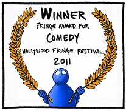

REVIEWS
Check out some of the nice things people have said about Lost Moon Radio:
"EDITOR'S PICK: a hilarious hour of sketch, music and a overarching story that plays throughout... make sure you get a chance to see this must-see show." – Zach Behrens, LAist
"A too-rare theater occurrence, this ... serialized variety show that's been appearing every few months at Los Angeles clubs is funny and intelligent." – Jeff Favre, Backstage West
"[B]rings to mind Prairie Home Companion but with a cranked-up urban irreverence, Spike Milligan or Spike Jones but naughtier, and The Groundlings but with a better batting average.... Lost Moon Radio shows the potential to be the live radio show for the new millennium generation." – Tony Frankel, Stage and Cinema
"The show has heart through and through. It’s an elaborate work from writers, actors and musicians who put thought into the script. Behind the skits, the songs and the humor, the show offers the audience a takeaway, hope. Hope for the arts, hope for humanity, hope that we all won’t sell out to the highest bidder." – Freddy Puza, LA Theatre Review
"SOTY = Show of the Year.... The writing was off the charts. A show like SNL should just scoop up the entire cast of Lost Moon Radio. It would be 100x better.... don’t be surprised if you see this thing made into a television show or a popular podcast or even a Sirius radio show. It’s that good." – Brendon Mulvihill, Live Comedy LA
"WHAT WAS THAT?? I'M CONFUSED." Jillian Reynolds, Good Day LA
If you're a journalist who'd like to cover Lost Moon Radio, . We'll send you a copy of our Electronic Press Kit and arrange for you to see our next performance.